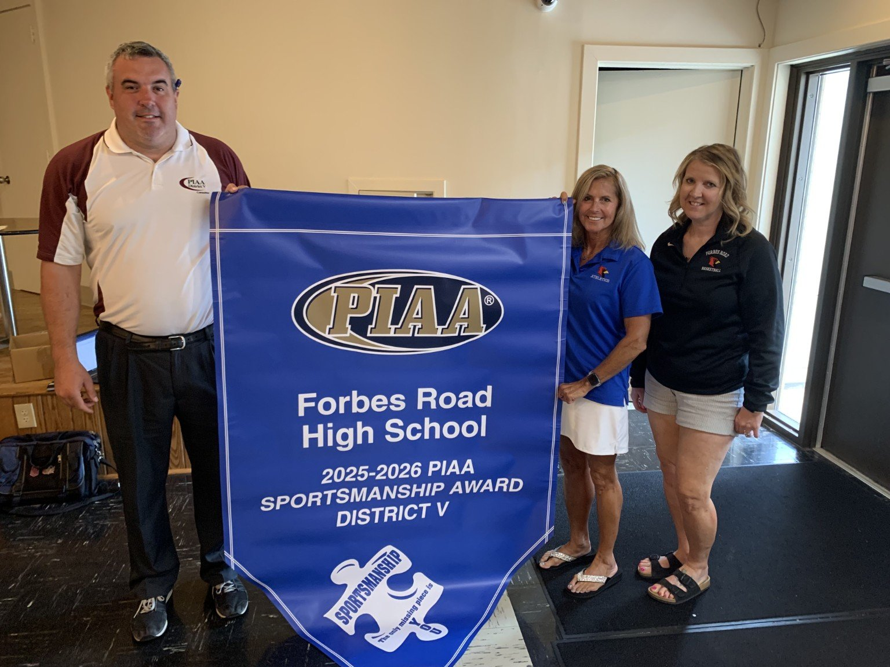

August 13, 2026 · Sportsmanship
Forbes Road High School Receives PIAA Sportsmanship Award
Forbes Road High School was recognized with a 2025–2026 PIAA Sportsmanship Award banner from District V, honoring the school's commitment to sportsmanship in interscholastic athletics.
Todd Best, District V Sportsmanship Chair, presents the award banner to Forbes Road High School representatives, including Heidi O'Neil.